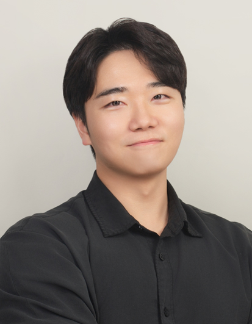

발표 소개
Hello, NPU 랩은 6개월 동안 12명이 매주 수요일 저녁에 모여 NPU 기초부터 AI 모델 구동까지 함께 공부하는 모임입니다. 전원이 두 번씩 발표하고 팀 프로젝트를 전 기간 병행합니다. 이번 발표에서는 랩을 어떻게 꾸려 왔는지, 세미나와 프로젝트를 어떻게 굴렸는지 공유합니다. 이 활동의 핵심 산출물은 "리벨리온 NPU 실전 가이드" 위키독스입니다. 교과서가 아니라 직접 돌려 보고, 막히고, 해결한 과정을 기록한 한국어 실전 가이드이며, GitHub에서 함께 집필해 위키독스로 발행합니다. NPU 개념과 SDK 환경 구성부터 비전·NLP·생명과학 모델 구동, vLLM 기반 LLM 서빙, 트러블슈팅과 용어집까지 다룹니다. 세미나로 쌓은 경험을 바탕으로 향후 논문 작업도 이어갈 예정입니다. NPU를 처음 접하는 분이 어디서부터 시작하면 되는지, 커뮤니티 기반으로 지식을 어떻게 누적할 수 있는지 이야기합니다.
- NPU
- 리벨리온
- 위키독스
- 스터디랩
- vLLM
- 오픈소스집필
연사 소개

조현욱
42Maru AI Engineer, Hello, NPU 랩 랩장
조현욱은 리벨리온 NPU에 AI 모델을 직접 올려 보며 NPU와 AI를 기초부터 응용까지 함께 공부하는 Hello, NPU 랩의 랩장이다. 42Maru에서 AI 엔지니어로 일하고 있으며, 2026년 6월부터 12월까지 12명의 랩원과 매주 수요일 저녁 세미나와 팀 프로젝트를 병행하고 있다. 그 과정에서 쌓은 경험을 한국어 실전 가이드 위키독스로 정리해 발행하고 있다.